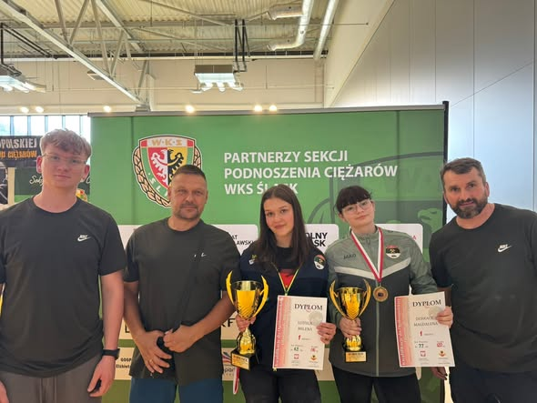

Olimpiada
20 czerwca 2026
OGROMNY SUKCES ZAWODNICZEK: KWALIFIKACJE DO OOM W WROCŁAWIU! 💥
20 czerwca we Wrocławiu odbyły się kwalifikacje do Ogólnopolskiej Olimpiady Młodzieży. Nasze zawodniczki zdominowały pomost, a Milena Ludyga i Magdalena Derkacz wróciły z cennymi medalami i świetnymi wynikami, potwierdzając wysoką formę przed finałem w Łukowie.
Zobacz na Facebooku